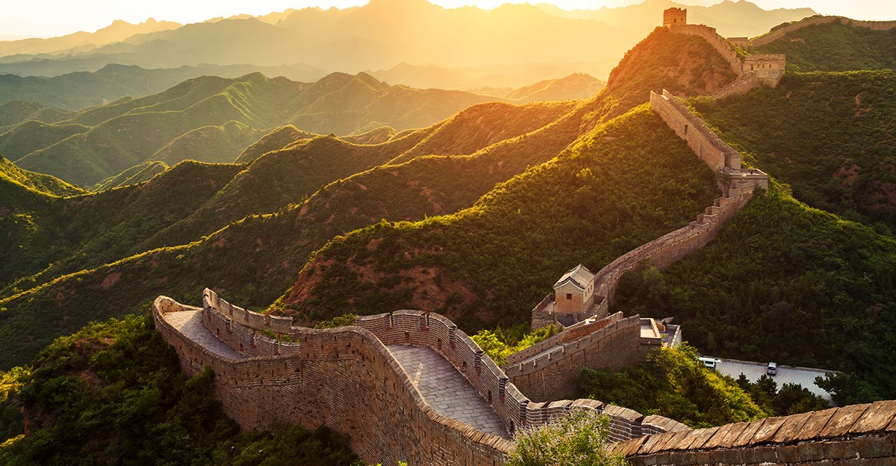

|  |
Se extiende desde Shanghaiguan, al borde del golfo de Bohai, en la costa oriental del país, hasta Jiayuguan, impresionante fortaleza que pone punto final a la histórica defensa, ya en las zonas desérticas de la provincia de Gansu. En total, recorre 6.000 kilómetros de territorio chino. |
La Gran Muralla es un símbolo de poder. Representa la unificación de China, porque estaba unida entre sí como China fue unificada por primera vez en la dinastía Qin (221-206 aC). Representa la impresionante habilidad de los chinos para trabajar juntos por el bien del país. |
|